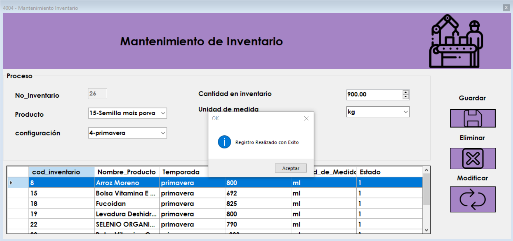
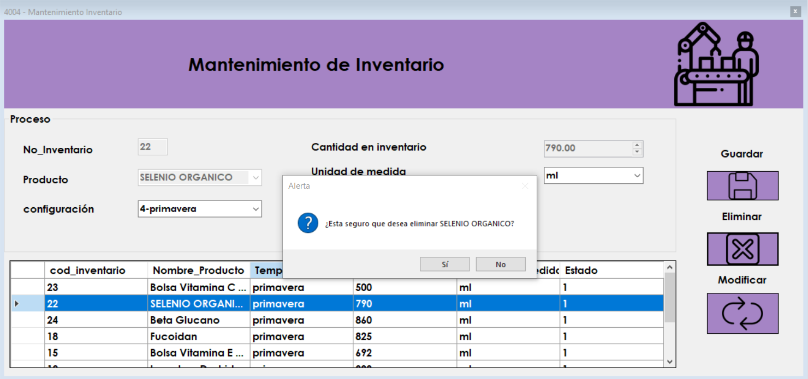

Pantalla de Inicio
El mantenimiento de inventario se utiliza para contabilizar manualmente la materia prima en la bodega de produccion una sola vez en el tiempo, tambien se le asigna una Configuracion de inventario, consulte la ayuda de Configuracion de inventario para entender al respecto. En este se ingresan las cantidades de materia, unidades de medida a almacenar en bodega.
Registrar Nuevo Producto en Inventario
Para registrar una nueva materia prima es necesario que no se haya ingresado con anterioridad, de ser asi se le da la opcion solo a un adimistrador para eliminarla y hacer correcciones en cantidades reales de lo contrario solo se podrá modificar su Configuracion de inventario.
Entonces debemos ingresar los datos solicitados como lo muestra la siguientes imagenes.

Modificar Configuracion de Inventario
Para modificar una materia ya ingresada deberá dar doble clic sobre la materia a modificar, solo podremos modificar la Configuracion ya que solo un administrador o gerente podra eliminar y reingresar el mismo Producto con una nueva cantidad.
Eliminar un Producto del Inventario
Para eliminar una materia prima, debe dar doble clic sobre la materia que deseamos eliminar, dar clic en el boton eliminar y debe estar seguro de que la materia que escogio es la correcta de ser asi, dar clic en "Si", de lo contrario dar clic en "no".

Errores
Se le pueden presentar los siguientes errores.
Error al ingresar datos incoherentes
Error al ingresar campos vacios
Error al ingresar una materia prima ya ingresada